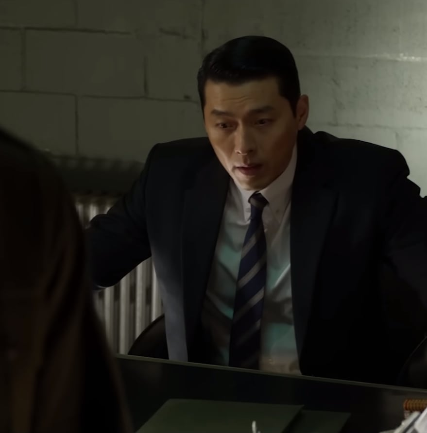
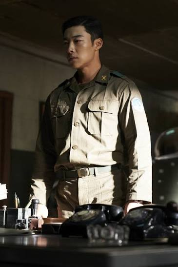
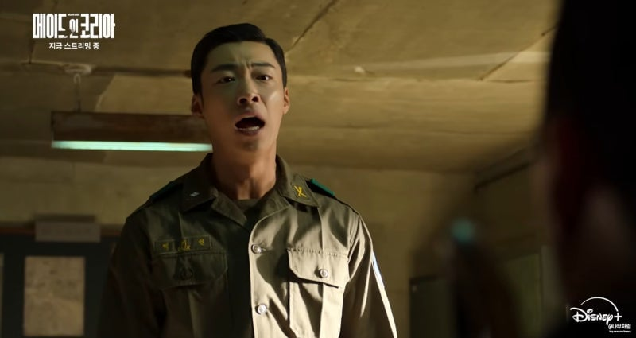
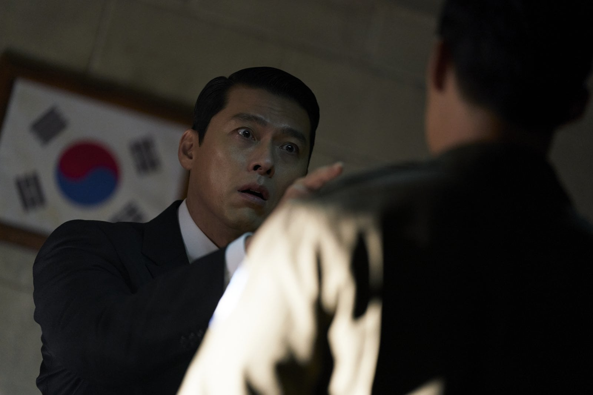
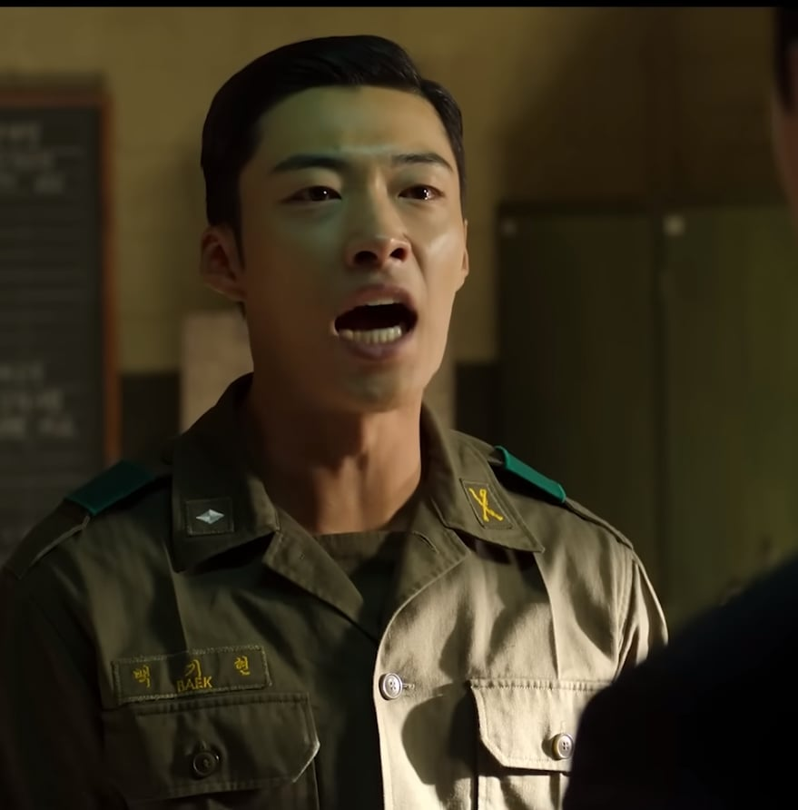

너 대신, 네 중대장이 옷 벗을거다

감사합니다 형님...
보안사 자리도 만들어놨으니까, 준비하고 있어

감사합니다 형님!

그리고 혹시라도, 절대 월남 갈 생각은 하지말고

제 인생은! 형이 알아서 합니다!

너 대신, 네 중대장이 옷 벗을거다

감사합니다 형님...
보안사 자리도 만들어놨으니까, 준비하고 있어

감사합니다 형님!

그리고 혹시라도, 절대 월남 갈 생각은 하지말고

제 인생은! 형이 알아서 합니다!
저러는 이유가 납득 가능했다면 잘만든거긴 할건데ㅋㅋㅋ
그냥 곤조있는 동생 만들어서
월남 다녀오고
파병 대가로 진급도 하고 인맥도 구축하고
형 덕으로 사는건 이제 그만해야지 생각도 해보고
그 다음에 이제 군부정권 오는데
엌ㅋㅋㅋㅋ 얘형이 안기부 대가리래ㅋㅋㅋ 하면서 차별도 좀 당하다
그래도 형이 도와준 기억좀 떠올리면서
형 위해서 그쯤부터 돌아서주기만 해도 꽤 괜찮았을텐데
근대 동생이 하나회 부술려고 잡입햇을거같다.
그냥 들어간거면 말이안됨 ㅋㅋ
그러기엔 오분뒤면 상황 종료인데 거길 들어가 ㅋㅋ 폰없던 시절이라 개답답.
아 빨리 나오라고 전화해!! 가 절로나옴
진짜 하나회 부수려고 잠입한거면 모를까
진짜면 캐릭터성 개병신임
정우성 캐릭터도 그렇고
정우성 연기도 연기지만 검사 역할이 너무 말도 안되고 이해가 안됨
경상도 + 육사 + 보안사
트리플 크라운 하나회 성골이 왜 하나회를 부숨?
살인카바해주는 가장격 아니면 아버지격인 형을...? 까려한다??? 이정도면 후레or호로자식 도 뛰어 넘은 것 같은데?????
장건영- 배우 연기관련 접어두고 배경 서사만 보면 백기태랑 웬수질 수 있음 충분히
백기현- 아니 왜...?
그리고 혹시라도, 절대 월남 갈 생각은 하지말고
표정 진짜같네 ㅋㅋㅋㅋ
형이 저렇게 된게 자신의 죄를 감추어주려고 했던것부터 시작이었다는 설정 존나 잘 짰더라
성인 중2병
카지노도 그렇고 존나센 주인공 만들어놓고 감당못해서 병신억까하다 조지는 느낌
이랬으면 이야기가 안돼
나이차이 좀 나는 형제가 어떻게 둘다 베트남전에 참전하나 했는데 20년동안 싸웠네
파월 한국군은 8년정도긴 함
제발 형이 알아서 해주십시오!!!
동생행동에 복장이터지는것을 보면 잘만든 캐릭터가 맞다 ㅋㅋㅋㅋㅋ
백기태 말 잘 듣고 따라갔으면 별달고 시즌2에서 제대로 도와줄 수 있었을텐데ㅋㅋ
다들 이렇게 분통터지는거 보니까 잘만든 캐릭터인가보구먼